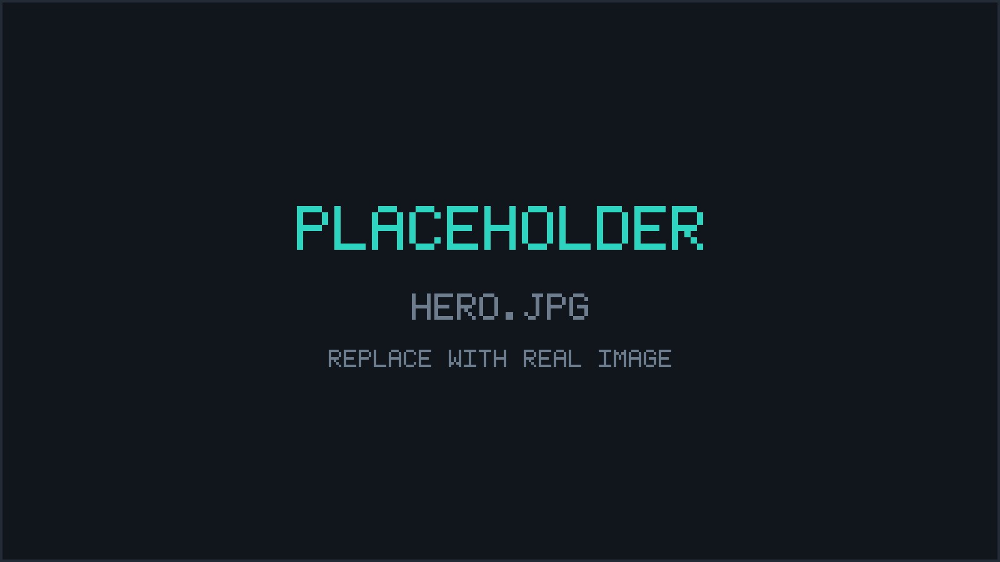
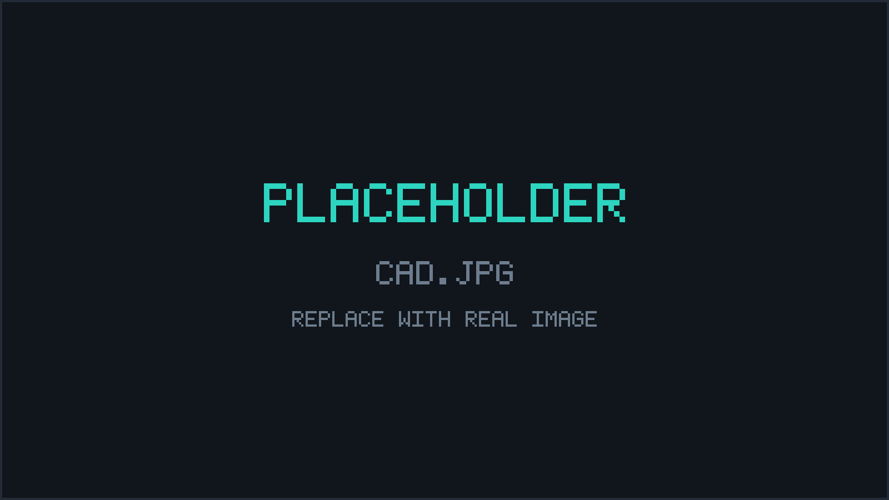
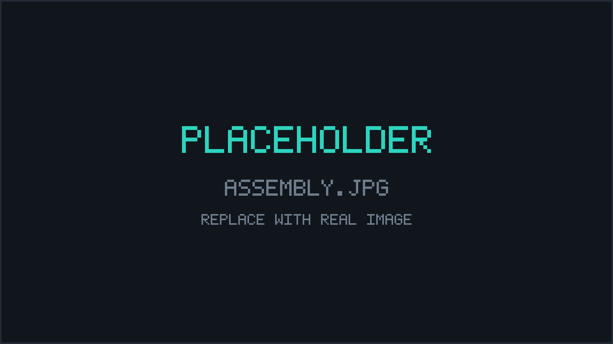

// PROJECTS / NEUROGRIP
NeuroGrip
EMG-controlled, tendon-driven 3D printed robotic hand.

// GOALS
Goals
Model and fabricate a 3D printed hand with individual finger movement, controlled non-invasively via surface EMG, proving feasibility of low-cost neurological prosthetic control.
// METHODS
Methods
SolidWorks design with DFM principles: press-fit filament joints, zero hardware fasteners. Each finger is driven by one continuous-rotation MG90D servo through an antagonistic dual nylon tendon drive, so one rotation direction flexes the finger and the other extends it, with zero return springs. Servos are powered and commanded through a PWM driver board.
An EMG module detects muscular voltage and passes it through a noise-rejection algorithm running on an Arduino UNO R3. A rolling average paired with a threshold value determines whether the muscle is contracted or relaxed, and the classification output drives the PWM board.
// THE CALL THAT MATTERED
The call that mattered
Two calls kept this hand inside its low-cost requirement: the noise-rejection algorithm, and the switch to continuous-rotation servos.
Clinical myoelectric sensors are expensive because muscular voltage is so small that the sensor needs to separate real signal from noise. The cheap sensors used here have a high sampling rate but no built-in filtering, so a rolling average paired with a threshold value determines whether the muscle is contracted or relaxed.
Standard positional servos cap at 180 to 270 degrees, so fully flexing a finger would need a spool large enough to break the compact forearm form factor. Continuous-rotation servos pull an arbitrary tendon length in a small package, and each finger drives to stall against the object it grips, so the fingers conform independently to irregular shapes. The servo then switches off and holds through tendon and gear friction, with stall current under 3A for less than half a second.
// RESULTS
Results
Zero misclassifications across 30 trials, with a successful trial defined as the hand clenching when the muscle contracts and releasing when it relaxes. The hand assembly went together without any hardware: every joint is press-fit with filament. The dual tendon design enhances grip capability.
// NEXT
Next
Implement wrist actuation and lateral finger actuation. Replace the Arduino UNO R3, EMG module, and PWM driver with a custom PCB so the electronics fit inside the arm enclosure. Add current sensing to prevent servo burnout under stall, or move to stepper motors.


StrideSync
Bilateral wearable gait analysis system for distance runners.